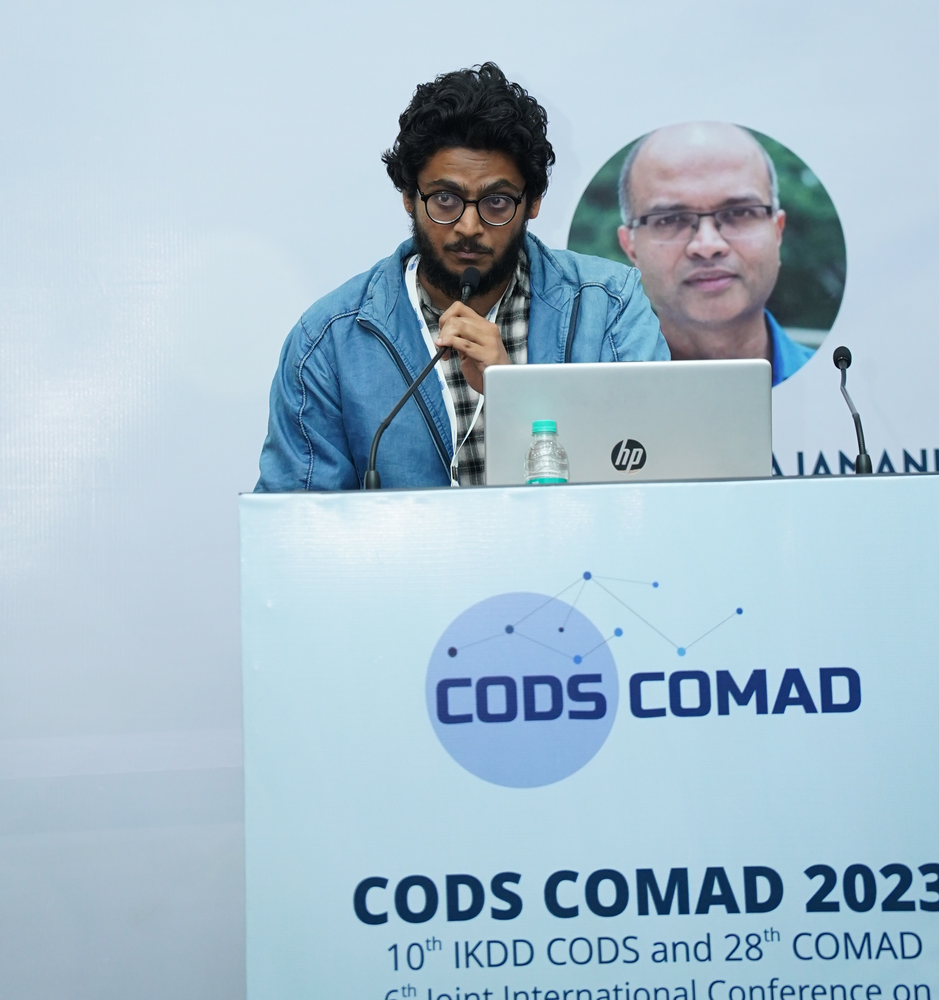

Selected Talks / Tutorials

Oral Paper Presentation at CODS-COMAD 2023

Talk on "The Future of Metaverse"
Tutorial at 5th Summer School on AI, IIIT Hyderabad
Tutorial on "Deep Learning with Pytorch"
Community Service
-
Co-Founder, VyuWing Learning. My goal here is to promote self-learning among students and break their barriers to tech. I onboarded mentors from Fortune 500 companies, started one-on-one mentorship, community sessions, among others.
Here's what i observed --
many believe they can self-learn from free resources (YT, Git, etc) and don't need costly courses or learning plans to get into tech/AI, but still end up doing the opposite.
Why? 1) students are marketed "this course or nothing", 2) students don't believe a free github roadmap to ML can really get them their dream job,
3) most self-learners have had someone/a mentor to make them comfortable and confident in learning independently. Many more reasons.
I won't stop talking about this and definitely need more than a page to share my learnings and vision from over 2 years. So, please connect here if you'd like to chat or maybe need any help.
-
Volunteering is closest to my heart.
Over the years, I have been fortunate to contribute to several organizations: Youth Empowerment Foundation,
Indian Centre for Development and Rights (ICFDR), FFLV USA, National Service Scheme-IIT Hyderabad.
If you think I can contribute to your cause, please reach out here . In my capacity, I also financially support the education expenses of those in need. Do connect.
- Founder and Chair, ACM Student Chapter - IIT Hyderabad.
My goal with this chapter was to promote research culture and aspirations among students. I started initiatives like weekly paper reading sessions, invited researchers for talks,
one-on-one student mentoring, and 'Women in CS,' among others.
Super grateful for what we achieved as a team in this chapter.
Academic Service
- Reviewer/Sub-Reviewer : WACV 2020, Neurips 2022, Neurips 2023 Workshops, WACV 2024, ICCV 2023, CVPR 2024
- Student Volunteer : ICCV 2019, ICML 2020, KDD 2020, Neurips 2020, ICLR 2020, Recsys 2020
- Teaching Assistant, IIT Hyderabad: CS-2323 (Computer Architecture), CS-2410 (Theory of Computation), CS-2420 (Introduction to Complexity Theory)
|